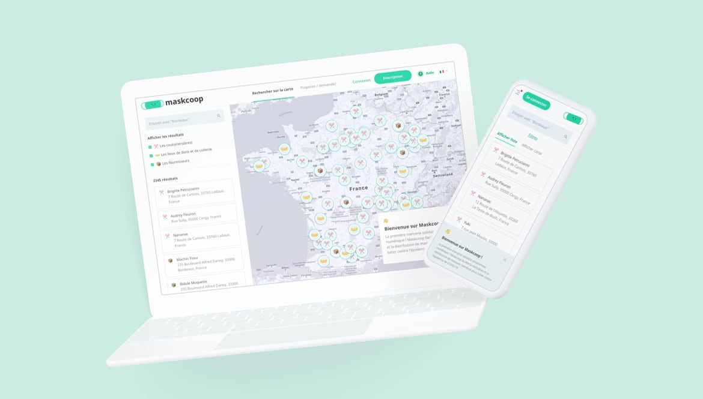

Maskcoop
Créer en 7 jours un univers et un parcours utilisateur engageants et fonctionnels pour permettre à tous de s'équiper en masques "barrières" contre le Covid-19 via un réseau de couturières bénévoles.

Challenge
Mise en place d'une plateforme de mercerie solidaire européenne pour lutter contre le Covid-19 (Confinement #1). Une app qui permet aux plus fragiles, aux plus démunis, aux professionnels pour la continuité de leurs activités de s'équiper en masques barrières en temps de crise et de pénurie d'Etat. Digitaliser un service d'entraide afin de mettre en réseau un tissu national de couturières bénévoles et permettre une couverture nationale "de voisinage" pour fournir masques et protections.
Voir le site
Histoire
Un projet bénévole full-remote
En mars 2020, avec mon développeur fétiche (et sur son idée originale) Vivian Sarazin - et par la suite d'autres acteurs talentueux et engagés (cc Benjamin, Olivia, Henry 🙂), nous nous sommes appliqués bénévolement à mettre à profit nos expertises individuelles au service de tous avec la création de Maskcoop.
Maskcoop, c'est la première plateforme de mercerie solidaire dédiée à la réalisation et à la distribution de masque barrière pour lutter contre le Covid-19
En une semaine, grâce à l'engagement d'incroyables couturières réunies autour du groupe Facebook "Les Petits Masques Solidaires", nous avons réussi le tour de force de créer une plateforme nationale, utilisée par plusieurs milliers de personnes par jour lors du confinement.
L'objectif était simple mettre en relation des particuliers (fragiles, modestes) et des professionnels (pour la continuité de leurs activités) avec un réseau de couturières bénévoles national afin de les équiper en masques barrière et se protéger du Covid-19
Les chiffres ont été incroyables avec parfois des couturières qui auront réalisé plusieurs milliers de masques en l'espace d'un mois (!!!). L'engagement aura été total sur le groupe Facebook avec près de 15.000 membres.

Pré-requis
Respecter les normes sanitaires
Empêcher la circulation du virus par nos actions et protéger nos utilisateurs.
Au tout début de cette crise sanitaire, les protocoles d'Etat était en perpétuels évolutions et changement rendant l'adaptation difficile. Voici ce que nous avons mis en place :
- Nous avons produit un guide d'utilisation des masques barrières
- Rappelé à chaque étape et à chaque action utilisateur de bien faire attention à respecter les gestes barrières
- Encourager les couturières à déposer les masques à leur fenêtre ou au pas de leur porte pour que les particuliers viennent les récupérer
Solution
Annuaire libre en consultation
Libre mais pas débridé
Une plateforme de mercerie sous la forme d'annuaire de proximité. Une map permet à l'utilisateur de se repérer. Il peut accéder à un moteur de recherche ou il vient rentrer sa ville et découvrir les couturières à proximité de chez lui afin de prendre contact avec elle.
Toutefois, la prise de contact auprès d'une couturière nécessite de s'inscrire. Le but de la plateforme n'est pas de faire de l'acquisition à tout va mais bien de qualifier la demande. D'une part pour la protection de la vie privée de nos couturières et aussi pour maximiser les chances de réussite de la requête. En bref, plus nous avons à faire à un utilisateur qui joue le jeu, plus nos couturières verront leur produit être utile et leur temps bien dépensé.


Inscription et demande. 3 temps nécessaires
Afin de garantir un minimum de sérieux à la demande et éviter de flooder les couturières, il a été convenu d'allonger le processus d'inscription à la plateforme
- Une inscription classique : Pseudo / Mail / Mot de passe
- Un formulaire de profiling: Proposer du contenu personnalisé en fonction du profil et la localité géographique de l'utilisateur
- Un formulaire de demande: En dernière étape, l'utilisateur qui veut entrer en contact avec la couturière doit remplir un formulaire lui demandant d'écrire directement à sa couturière tout en rappelant les règles de base de la bonne conduite d'un échange sur la plateforme.


Features et services
Suivi des demandes
Tableau de bord pour les couturières afin de suivre leur commande et d'interagir avec les demandeurs.
Ce tableau permet de visualiser la date de la commande, l'email du demandeur, la quantité de masques voulu et un flag de suivi (demande acceptée / commande en production / commande en livraison et commande livrée). Chaque ligne possède son panel d'actions facilement accessible (supprimer la demande, voir le détails, marquée comme livrée) et une page associée pour plus de détails de la commande

Page profil pour les couturière, fournisseurs et centre de dons et collectes
Créer des pages dédiées pour chaque membre "actif du site" (par opposition aux particuliers / professionnels, passif dans leurs actions → consommateurs de flux) afin de les rendre autonomes (notamment pour les partages sur les réseaux sociaux et l'indexation moteur de recherche)